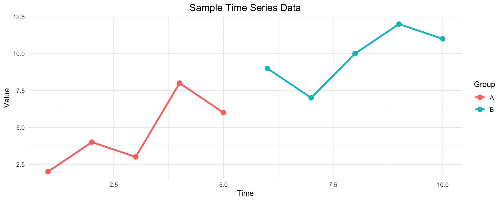

# Numeric data
numeric_var <- 42.7
class(numeric_var)
# Character strings
text_var <- "Hello, R!"
nchar(text_var)
# Logical values
logical_var <- TRUE
is.logical(logical_var)
# Factors for categories
factor_var <- factor(c("Low", "Medium", "High"))
levels(factor_var)Introduction to R Programming
Applying R to Lifestyle and Brain Health Research
Getting Started
Installation Requirements:
- Base R: Core language
- RStudio: Integrated development environment
- Packages: Extended functionality
💡 Tip: Always update R and packages regularly for latest features
Essential Packages:
| Package | Purpose |
|---|---|
| tidyverse | Data manipulation |
| ggplot2 | Visualization |
| dplyr | Data wrangling |
| readr | Data import |
R Data Types and Structures
Fundamental Data Types
Data Structures in R
Vector Operations:
# Creating vectors
numbers <- c(1, 5, 10, 15, 20)
names <- c("Alice", "Bob", "Charlie")
# Vector arithmetic (vectorized operations)
numbers * 2[1] 2 10 20 30 40. . .
Data Frames - The Heart of R
Data frames are R’s primary data structure for rectangular data, similar to spreadsheets or SQL tables.
# Creating a data frame
df <- data.frame(
Name = c("Alice", "Bob", "Charlie"),
Age = c(25, 30, 35),
Score = c(85, 92, 78)
)
head(df, 2) Name Age Score
1 Alice 25 85
2 Bob 30 92Data Import and Export
Best Practice: Always examine your data structure with
str(),summary(), andhead()after importing
Reading Data:
# Read CSV
read.csv("data.csv")
# Read Excel
readxl::read_excel("data.xlsx")Writing Data:
# Save as CSV
write.csv(data, "output.csv")
# Save R objects
save(data, file = "data.RData")Data Visualization with ggplot2
library(ggplot2)
# Sample data
sample_data <- data.frame(
x = 1:10,
y = c(2, 4, 3, 8, 6, 9, 7, 10, 12, 11),
group = rep(c("A", "B"), each = 5)
)
# Create a professional plot
ggplot(sample_data, aes(x = x, y = y, color = group)) +
geom_line(size = 1.2) +
geom_point(size = 3) +
theme_minimal() +
labs(
title = "Sample Time Series Data",
x = "Time",
y = "Value",
color = "Group"
) +
theme(plot.title = element_text(hjust = 0.5, size = 14))
Statistical Analysis Workflow
Reproducible Research Principles: Document your analysis, use version control, and create reproducible scripts
Typical R Analysis Pipeline:
- Data Import →
read.csv(),read_excel() - Data Cleaning →
dplyrfunctions, missing value handling
- Exploratory Analysis →
summary(),cor(), visualizations - Statistical Modeling →
lm(),glm(), specialized packages - Results Interpretation → Coefficients, p-values, effect sizes
- Reporting → R Markdown, Quarto, publication-ready outputs
Next Steps and Resources
Learning Path:
- Fundamentals: R syntax, data types, functions
- Data Manipulation: tidyverse
- Statistics: Hypothesis testing, regression
- Advanced Topics: Shiny apps
Getting Help:
# Built-in help
?function_name
help("lm")Remember: R has a steep learning curve initially, but becomes incredibly powerful once you master the basics.
Questions?
Contact: your.email@institution.edu